CosyVoice
下载模型
提前下载好需要的模型，这里的下载路径是
# git模型下载，请确保已安装git lfs
mkdir -p pretrained_models
git clone https://www.modelscope.cn/iic/CosyVoice2-0.5B.git pretrained_models/CosyVoice2-0.5B
git clone https://www.modelscope.cn/iic/CosyVoice-300M.git pretrained_models/CosyVoice-300M
git clone https://www.modelscope.cn/iic/CosyVoice-300M-25Hz.git pretrained_models/CosyVoice-300M-25Hz
git clone https://www.modelscope.cn/iic/CosyVoice-300M-SFT.git pretrained_models/CosyVoice-300M-SFT
git clone https://www.modelscope.cn/iic/CosyVoice-300M-Instruct.git pretrained_models/CosyVoice-300M-Instruct
git clone https://www.modelscope.cn/iic/CosyVoice-ttsfrd.git pretrained_models/CosyVoice-ttsfrd
windows
这是和
踩坑
看了官方的部署说明之后，觉得小意思，没有

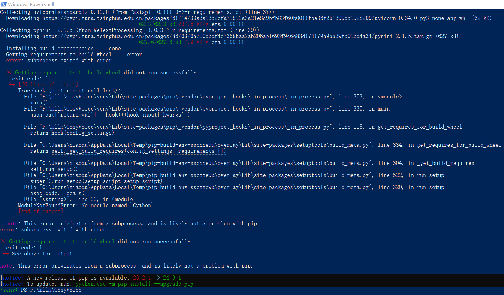
克隆项目
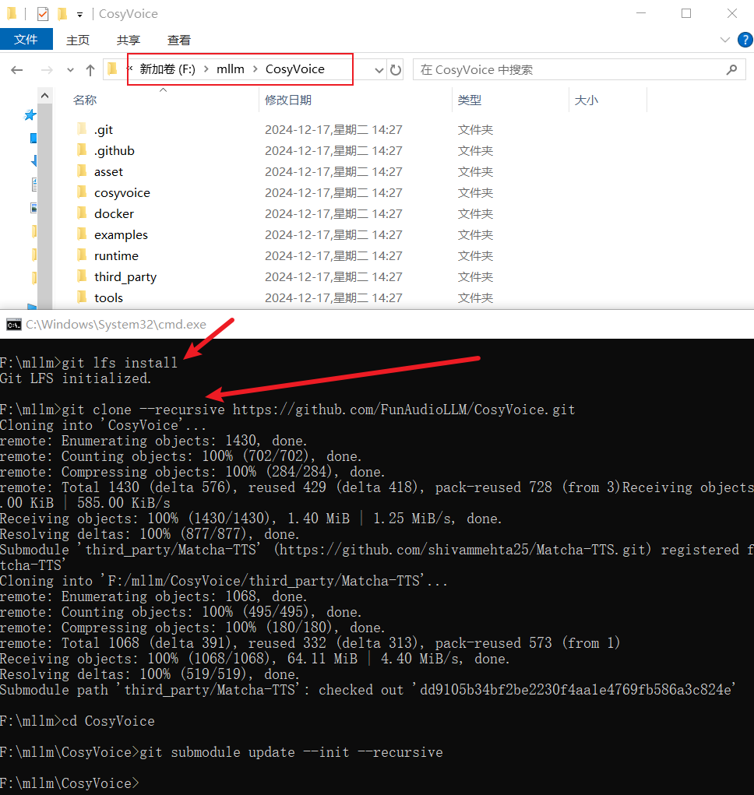
git clone --recursive https://github.com/FunAudioLLM/CosyVoice.git
# 该项目依赖子模块 Matcha-TTS，保证已经克隆下来，如果上面没有克隆下来，可以执行下面的命令
cd CosyVoice
git submodule update --init --recursive
虚拟环境/安装依赖
注意啊！注意啊！注意啊！这里用的
conda create -n cosyvoice python=3.10
conda activate cosyvoice
# pynini is required by WeTextProcessing, use conda to install it as it can be executed on all platform.
conda install -y -c conda-forge pynini==2.1.5
pip install -r requirements.txt
点击查看
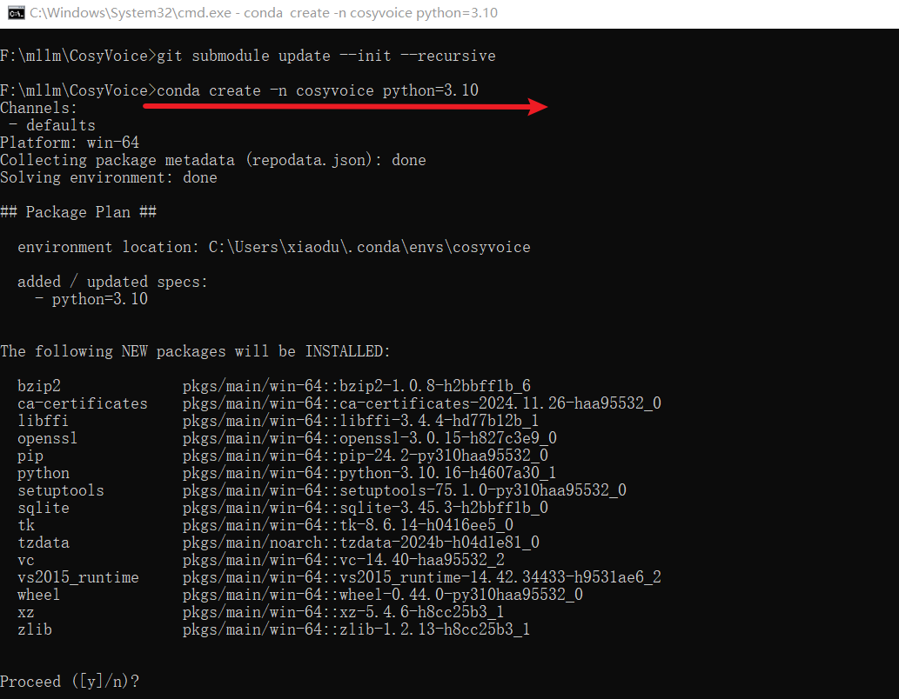
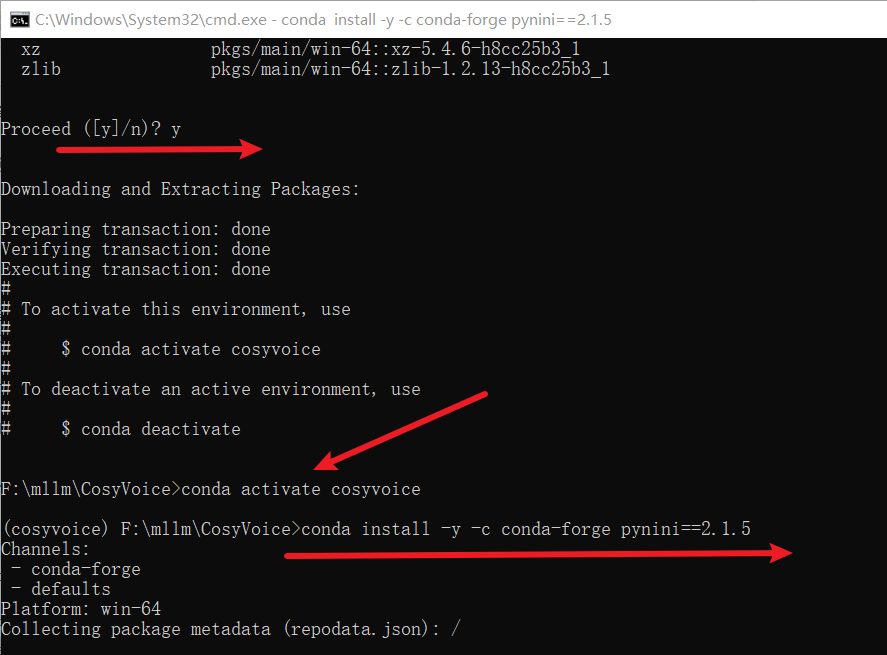
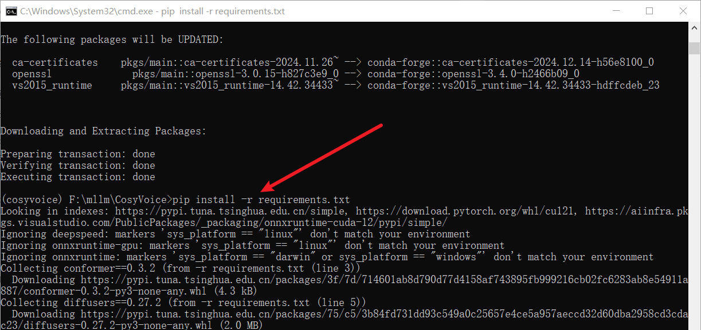
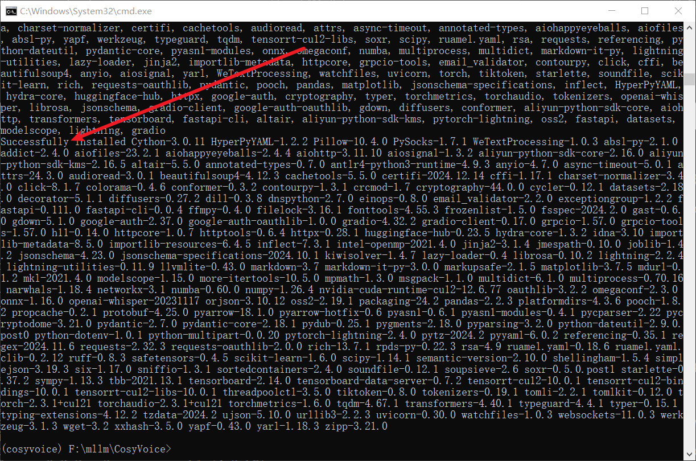
运行项目-WebUI
环境和模型都弄好了，下面就是启动项目了，这里用的是
python webui.py --model_dir "E:/llm/pretrained_models/CosyVoice2-0.5B"
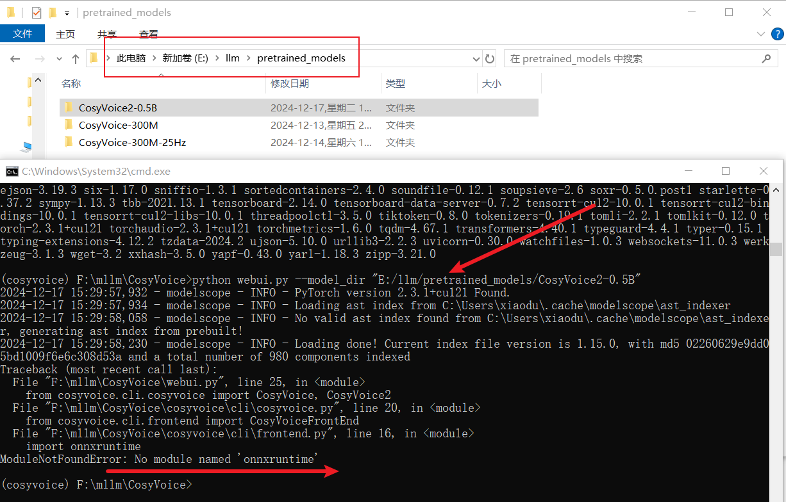
这个问题还好处理，直接安装一下就行了。不过疑问的是
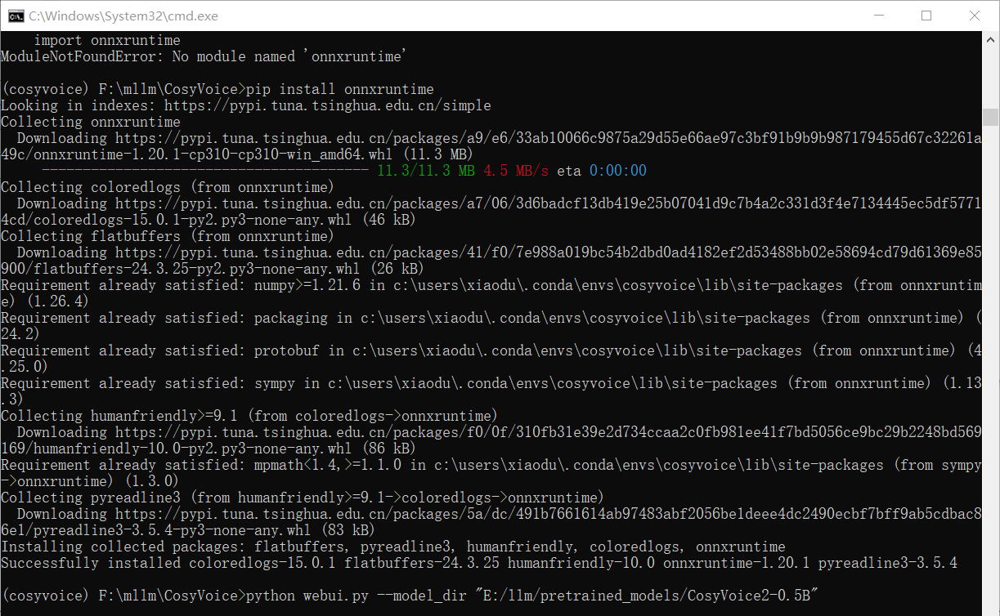
搞定后，再次启动项目，看看这次的效果：

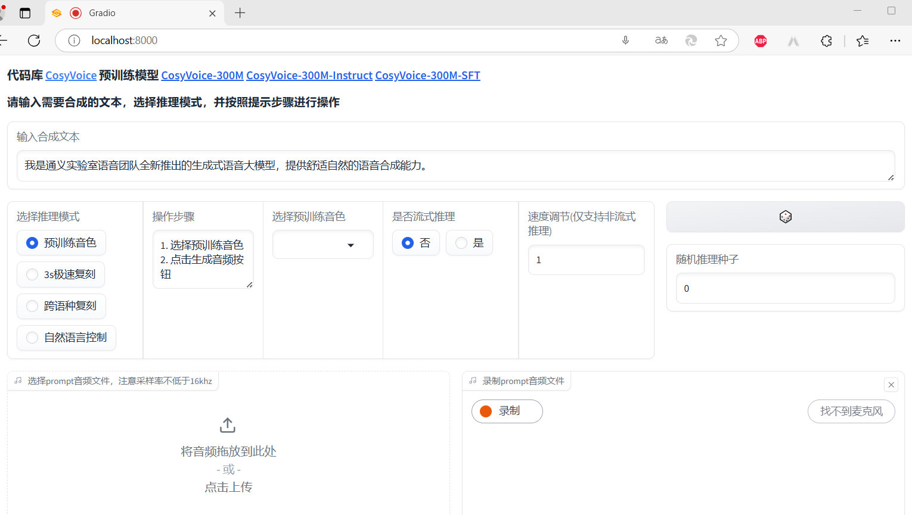
测试项目
3s极速复刻
对这个比较感兴趣，先尝试这个。需要复刻（或者说合成）的文本时
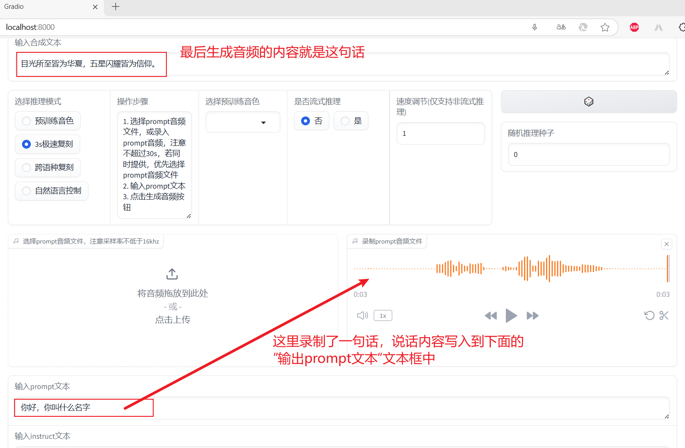
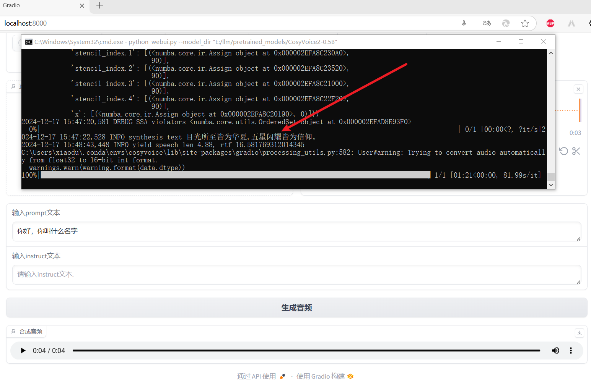
虽然咱的老电脑有点慢，但还是成功了，并且感觉还挺像，非常满意……真是不禁夸啊！想着把录制的源音频和复刻之后的音频下载下来，结果下载的一个 txt 文件，一个是 wav 文件，但是文件大小为 0 。😵😵😵
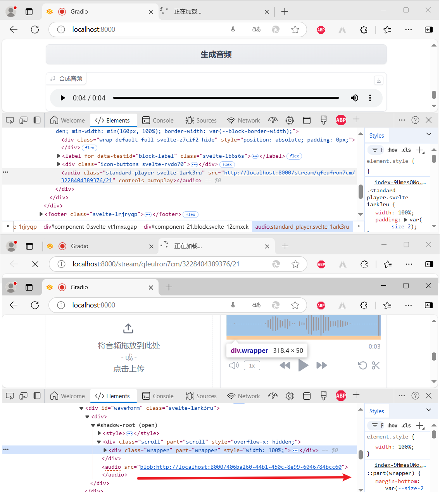
于是就自己看了一下源码，心想：既然下载不下来，我就自己保存下来，临时救救场。如下：
# 这里是自己添加的代码
from datetime import datetime
source_audio_filename = 'source_' + datetime.now().strftime('%Y-%m-%d %H-%M-%S-%f')[:-3] + '.wav'
clone_audio_filename = 'clone_' + datetime.now().strftime('%Y-%m-%d %H-%M-%S-%f')[:-3] + '.wav'
prompt_wav_loaded = load_wav(prompt_wav, prompt_sr)
torchaudio.save(source_audio_filename, prompt_wav_loaded, prompt_sr)
# 注意代码的位置
torchaudio.save(clone_audio_filename, i['tts_speech'], cosyvoice.sample_rate)

进行的还挺顺利的，如下图：
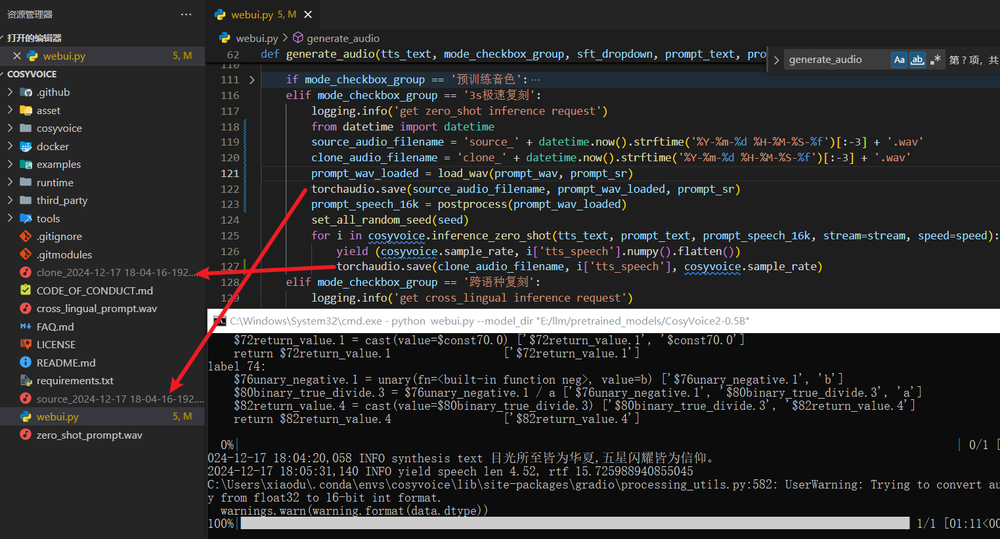
运行项目-API
WebUI 不是我们的终点，我们需要的是 API，但是
先看一下类库方式使用的简单示例：
import os
import sys
from cosyvoice.cli.cosyvoice import CosyVoice2
from cosyvoice.utils.file_utils import load_wav
import torchaudio
ROOT_DIR = os.path.dirname(os.path.abspath(__file__))
sys.path.append('{}/third_party/Matcha-TTS'.format(ROOT_DIR))
if __name__ == "__main__":
tts_text = "我们生在红旗下，长在春风里，人民有信仰，国家有力量，民族有希望，目光所至皆为华夏，五星闪耀，皆为信仰，愿以吾辈之青春，护我盛世之中华 ，此生无悔入华夏，来生还做中国人！"
prompt_text = "你今天晚上吃的什么饭呀"
cosyvoice = CosyVoice2('E:/llm/pretrained_models/CosyVoice2-0.5B',load_jit=True, load_onnx=False, load_trt=False)
prompt_speech_16k = load_wav('source_001.wav', 16000)
for i, j in enumerate(cosyvoice.inference_zero_shot(tts_text, prompt_text, prompt_speech_16k, stream=False)):
torchaudio.save('zero_shot_ddz_{}.wav'.format(i), j['tts_speech'], cosyvoice.sample_rate)
上面的代码跑通之后，开始弄API，入口文件为
点击查看代码详情
之后，你只需要
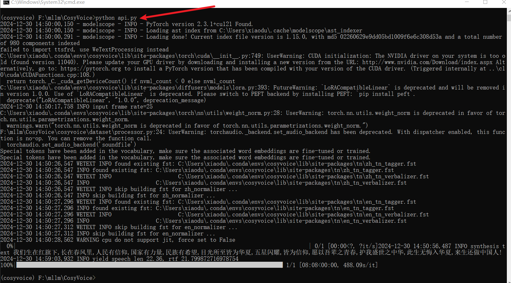
下面再看一下，利用接口文档测试接口的截图：
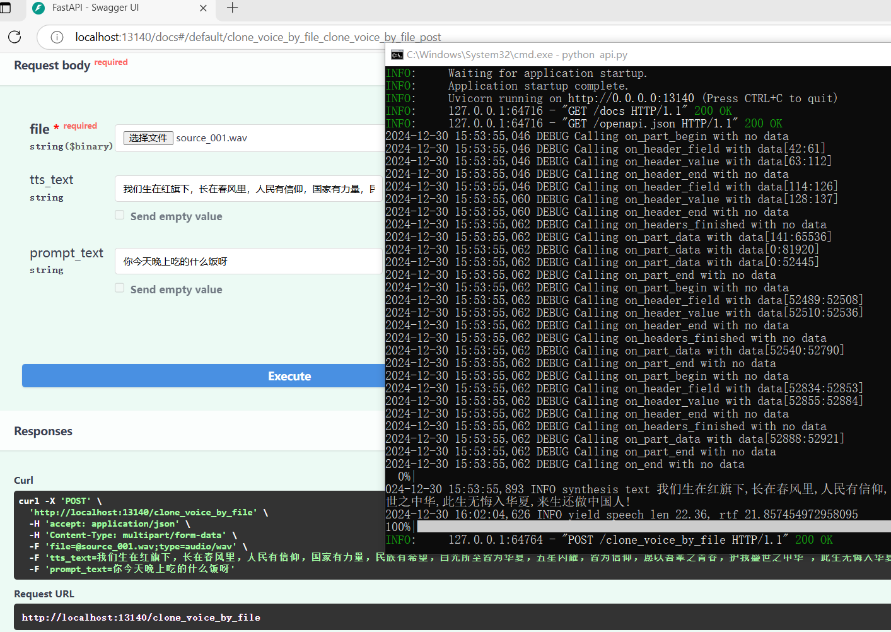